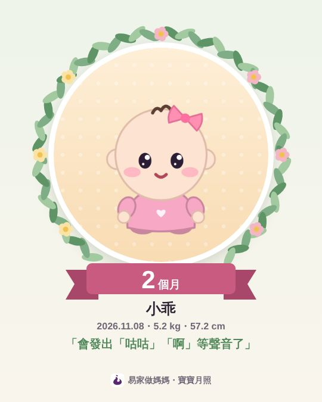
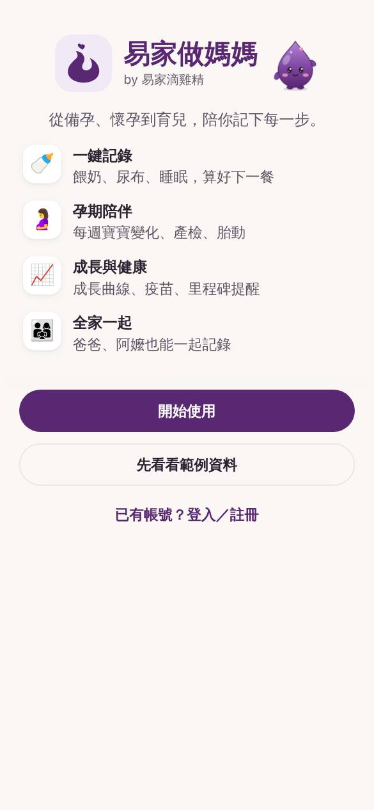
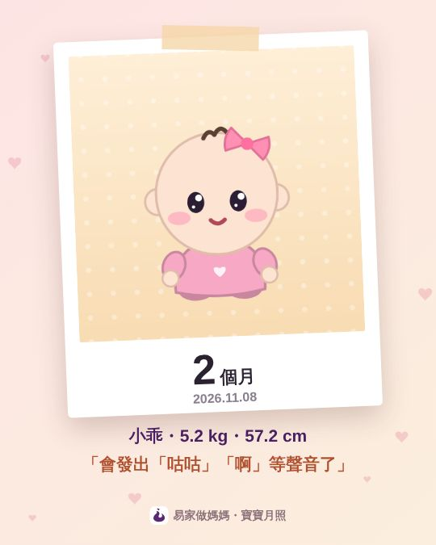
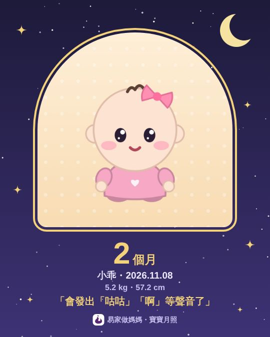

A接下來
從你最近的紀錄，推算下一餐、下一次想睡的大約時間。只是參考，寶寶說了算。


從備孕、懷孕到育兒的手機小幫手。這一期，我們跟著一位媽媽，用它過完一天。
定價0元不用註冊
打開就能用
P.04專題
小美的寶寶小乖兩個多月大。我們跟著她用易家做媽媽過完一天——人物是虛構的，畫面都是 App 的真實畫面。
深夜按下親餵，畫面自動換成暗暗暖暖的陪伴模式：大大的計時、左右一按就換邊，還有輕輕的一句「記得喝口水」。有會員服務時，會告訴你現在還有幾位媽媽也醒著——是真實的人數，不是編的。
換爸爸顧寶寶。上一餐幾點、喝了多少、尿布、睡多久、正在計時的項目，一張卡講清楚，還能留一句交代。開了家人共用，按一下就傳到爸爸手機。

首頁直接告訴你「接下來」：大概幾點會想喝奶、什麼時候該準備哄睡。是從你自己的紀錄算出來的參考，寶寶說了算。
每個月的這一天，App 提醒你拍一張。選一個相框、寫一句話，身高體重自動放上去。照片只存在你的手機。

滿月、百日、第一年，手機裡的紀錄自己變成一段故事：半夜起來餵了幾次、換了幾片尿布、第一次發出「咕咕」聲是哪一天。在手機上做，不會上傳。

P.10使用說明
不用註冊、不用下載。打開網址就能用，喜歡再加到手機主畫面。
卡片 01・編號裝置展示 numbered device showcase

第一次打開，可以先看範例資料，或花一分鐘填寶寶的名字和生日。
餵奶、尿布、睡眠都在首頁，單手一按就記好；計時中的項目一直留在最上面。
交接卡一張講清楚。開啟家人共用，全家手機上的紀錄都一樣，而且端對端加密。
P.12功能
有些功能不會一直跳出來，但每天都在幫忙。
卡片 02・抽象賣點卡 abstract feature cards
從你最近的紀錄，推算下一餐、下一次想睡的大約時間。只是參考，寶寶說了算。
家人共用時，紀錄在你的手機上先鎖好才送出；伺服器收到的只是一串看不懂的亂碼。
身高、體重、頭圍畫成曲線，對照 WHO 兒童生長標準的參考範圍。
P.14紀錄
最常用的七種紀錄。點一張，下面的試玩 App 就幫你打開那一種。
卡片 03・弧形扇卡 arc fan cards
另外還有用藥、看診，和母乳庫存、疫苗、發展里程碑。
P.16衛教
把衛教做成一座座小島：備孕、懷孕、生產、坐月子到育兒，一共 35 個站點。每一站有重點小卡和打卡清單，很多站還有小測驗。
卡片 04・立體環視卡 3D ring carousel
P.18紀念
每個月一張。奶油、花圈、拍立得、夜空四種相框，可以寫一句話，身高體重自動放上去。照片只存在你的手機。
卡片 05・精選畫廊卡 featured gallery cards



奶油溫柔的米色，像一本相簿。
月照會提醒你每個月拍一張，一年後拼成一張成長拼貼。
P.22實際操作
這是完整的易家做媽媽，放了虛構的媽媽「小美」和寶寶「小乖」兩週的範例紀錄。隨便點、隨便記，都只存在這個試玩裡，不會跑進你自己的 App。
在手機上：手指放在框框外面滑，就能繼續往下看。